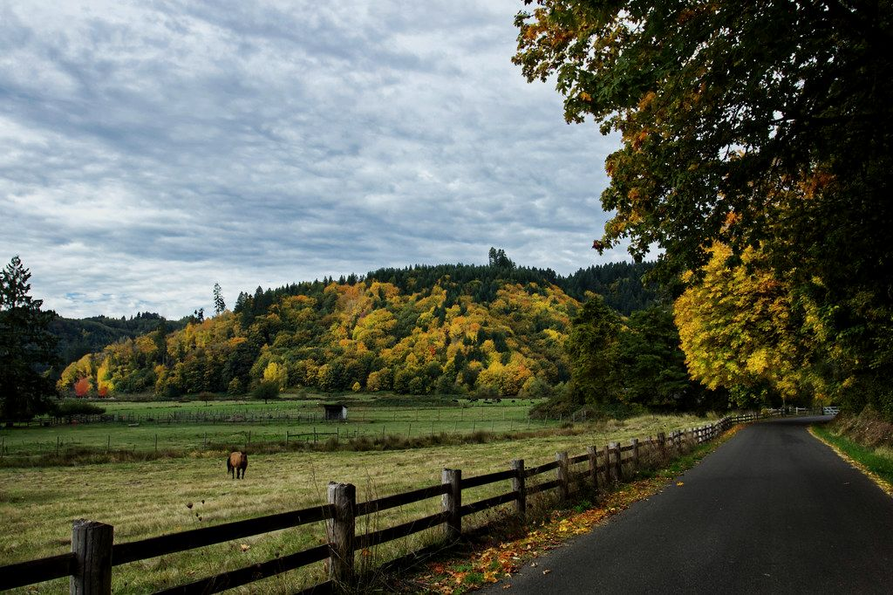
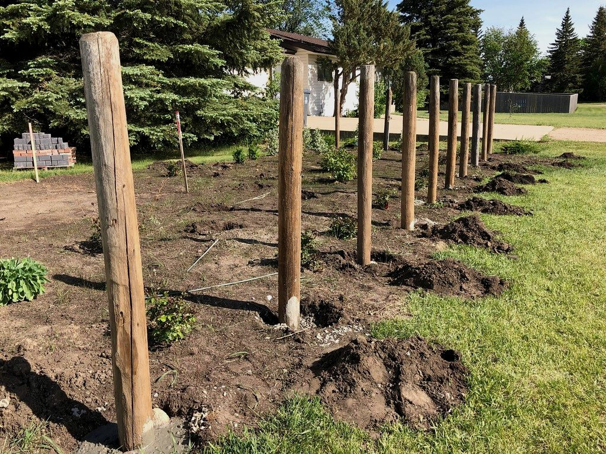
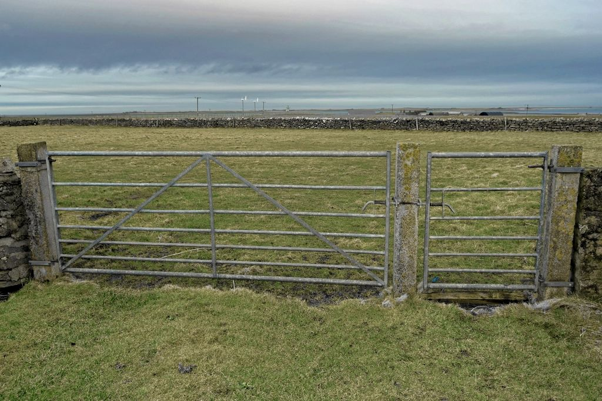
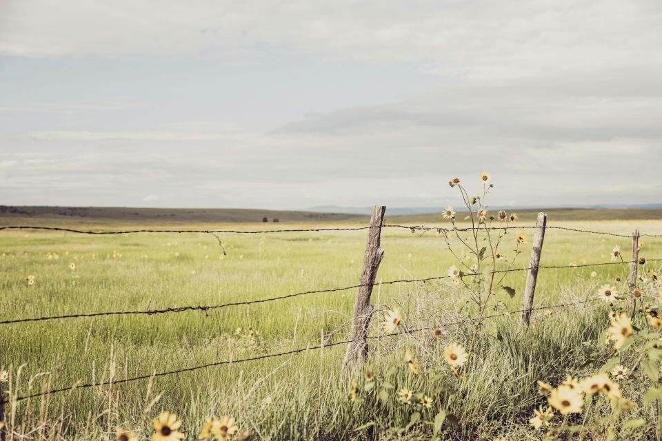

Fencing contractor · Masterton and the Wairarapa
Fences that stand straight for thirty years.
Hamish builds farm fences, post and rail, timber boundaries and gates across the Wairarapa. He walks the line with you, then sends a written quote within the week.
from 29 Google reviews
Fences we build
Rural and residential. Posts are H4 or H5 treated pine, set by rammer or concreted in, and every strainer is dug, not driven.
- 01
Farm fencing
Post and batten, 7 or 8 wire
New lines and replacements on sheep and beef country, tensioned and stapled by hand.
- 02
Post and rail
Lifestyle blocks and horse paddocks
Two to four rails, sawn or round, with a sighter wire on top if the horses lean.
- 03
Timber boundary fences
Paling, board and batten, privacy
Town sections from Lansdowne to Solway, built to 1.8 m, capped and sealed.
- 04
Gates
Farm, driveway and pedestrian
Galvanised farm gates hung true, timber driveway gates made in the shed.
- 05
Deer fencing
2 m netting on 2.4 m posts
Deer and boar country, with a tied-down base where the ground dips.
- 06
Retaining
Timber pole and sleeper walls
Banks held back along driveways and boundaries, drained behind.

Every strainer dug, every wire tensioned by hand.
- 30 yr
Life of an H5 strainer post in Wairarapa clay
- 2.4 m
Standard post length on farm lines
- 7 wire
Default for sheep and cattle
- 5 days
From walking the line to a written quote


What clients say
Sample reviews written for this style demo.
out of 5, from 29 Google reviews
-
“Hamish redid 1.2 km of boundary on our block above Te Ore Ore. Lines are dead straight over the rolling bits and the strainers haven't moved through a wet winter.”
Graeme · Te Ore Ore · Farm fencing
-
“Post and rail around the horse paddock plus a new driveway gate. Turned up when he said he would and cleaned up every offcut.”
Kirsty · Carterton · Post and rail
-
“Shared boundary fence with the neighbours. He talked us both through the options and the quote didn't change once he started.”
Tama · Lansdowne · Timber boundary fence
Where we fence
Based just out of Masterton. All of the Wairarapa valley, from Eketāhuna down to Featherston and out to the coast for bigger farm jobs.
Masterton town: Lansdowne, Solway, Kuripuni, Upper Plain, Te Ore Ore, Opaki, Homebush and the rural roads in between.
- MastertonHome base
- Carterton15 km
- Greytown25 km
- Eketāhuna38 km
- Martinborough40 km
- CastlepointBy arrangement
Get a quote
Call or text Hamish with where the fence goes and roughly how long. He'll come and walk it.
- Mon–Fri
- 7:00 am – 5:30 pm
- Saturday
- Site visits by arrangement
- Quote back
- Within 5 working days